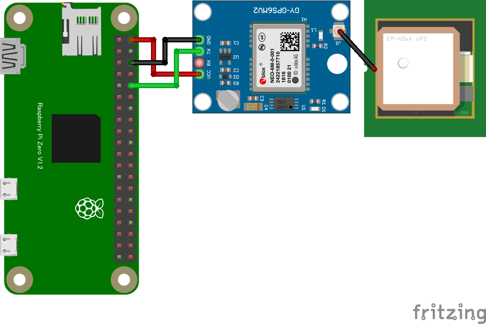

// シリアルからGPSデータ受信
import { SerialPort } from 'serialport';
import { ReadlineParser } from '@serialport/parser-readline';
import GPSpackage from 'gps';
const GPS = GPSpackage.GPS;
const port = new SerialPort({ path: '/dev/ttyS0', baudRate: 9600 })
const parser = port.pipe(new ReadlineParser())
const gps = new GPS();
parser.on('data', function (txtData) {
gps.update(txtData);
});
gps.on('data', function (data) {
if (data.type == "GGA") { // "RMC"タイプデータを読むと速度(ノット)が得られる
console.log(data);
}
/**
console.log("data:", data);
console.log("stat:", gps.state);
console.log("==============================================================");
**/
});sudo raspi-configcat /dev/ttyS0/dev/serial0
も使える。測位成功するとメッセージが派手になり、LEDが点滅する
(LEDは測位成功していないときは消灯)
cd myAppnpm install serialport gpsnode main.js